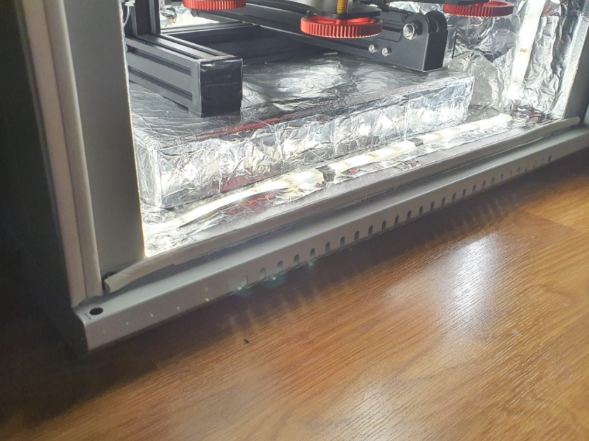
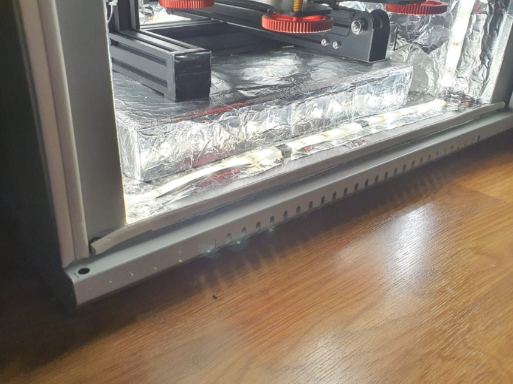
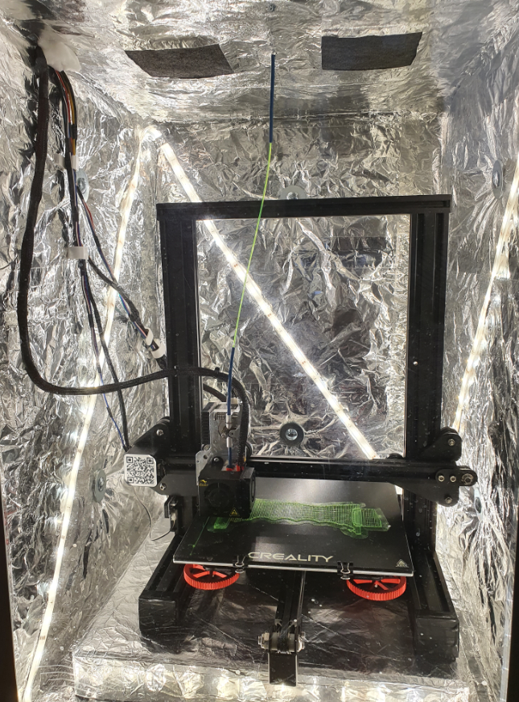
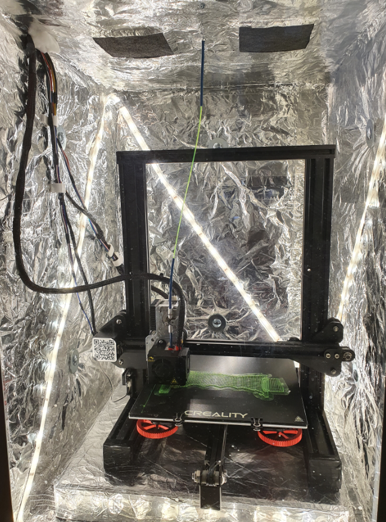

Henkilökohtainen Projekti

Rakastan 3D-suunnittelua ja 3D-tulostaminen on mahtava tapa saada ideat eloon valmiina osana tai laitteena. 3D-tulostus on kuitenkin haisevaa hommaa ja tulostuksen aikana vapautuvat kaasut voivat olla myrkyllisiä, varsinkin kun tulostetaan TPU:ta tai ABS:aa. Suomessa asunnon jatkuva tuulettaminen ei ole mahdollista, joten päätin rakentaa tulostimelleni ilmatiivin ja lämpöeristetyn kaapin. Kaapin avulla sisäilman laatu ei heikkene ja tulosteiden laatu pysyy hyvänä tasaisen lämpötilan ansiosta.
Kaapin rungonksi ostin halvalla netistä serverikaapin ja tiivistin sen kierrätetyillä Ekovilla-levyillä, jotka kelmutin pölyämisen estämiseksi ja päällystin alumiinifoliolla lämmönheijastumisen maksimoimiseksi. Nämä eristelevyt pulttasin kiinni kaapin seiniin ja eristin levyjen reunat alumiiniteipillä. Lopuksi asetin kaapin pohjalle betonilaatan, jonka avulla lattiasta välittyvä tärinä voidaan minimoida.


Kaapista poistettavan ilman puhdistamiseksi rakensin 12V tietokonetuulettimista, ilmanvaihto-osista ja 3D-tulostetuista sovittimista filtrointijärjestelmän. Filtrointijärjestelmän ulkopuolella on HEPA-filtteri ja sisällä aktiivihiilisuodatinkangasta. Lopuksi järjestelmän osat tiivistettiin kuumaliimalla, jotta ilma ei karkaisi ennen filtteröintiä.
 

Sähköisten osien suojelemiseksi kaapin suhteellisen korkealta sisälämpötilalta, tein jatkeet kaikkiin tulostimen sähköjohtoihin ja siirsin elektroniset osat kaapin ulkopuolelle. Ainoat osat, jotka ovat kaapin sisällä ovat askelmoottorit, rajakytkimet ja LED-valot.


Tulostinfilamenttirullat piti myös siirtää kaapin ulkopuolelle, joten suunnittelin kaapin ylä laatikon, jossa filamenttirullat pyörivät, pysyvät kuivina ja huoneenlämmössä. Kaappi ei ole vielä täysin valmis, ja kunhan aikaa taas riittää, rakennan kaappiin Arduino-pohjaisen, ylikuumentumisen estävän lämpöreleen ja Raspberry-pohjaisen etähallinta- ja valvontajärjestelmän.
 
